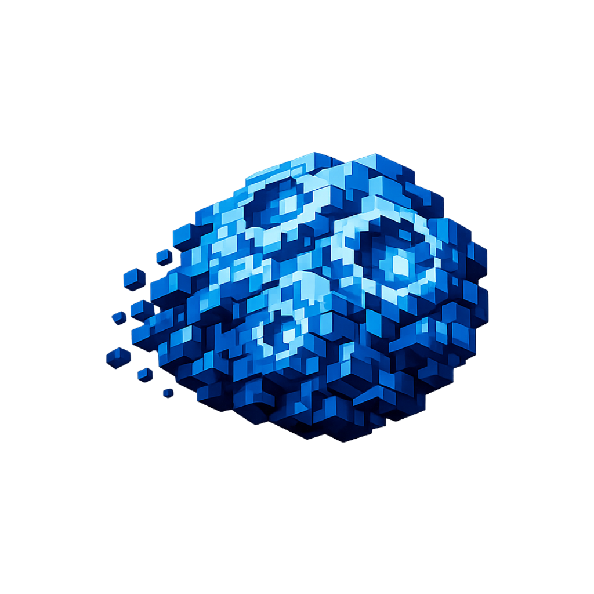

NEWEST
?
MICROSOFT ACCOUNT REQUIRED
Ready.
VERSION MANAGER
Choose your version
Three dedicated Minecraft instances. Your mods and settings stay organized by version.

ACTIVE VERSIONSpectorClient 26.2Ready to launch · Fabric client
SELECTED
Available releases
Use a version or open its Content librarySUPPORTED
26.2
LEGACY
1.21.11
CONTENT LIBRARY
Mods & content
Discover, install and manage mods, resource packs, and shaders.
STEP 01 · PICK A VERSION
Which SpectorClient version do you want to browse for?
Content is filtered to the selected Minecraft version.
SpectorClient 26.2
Ready.
Explore Modrinth
Select a versionChoose a version to browse compatible content.
Installed Mods
0 modsMICROSOFT IDENTITY
Accounts
Sign-in happens in Microsoft's browser/device-code flow. SpectorClient never asks for your Microsoft password.
PLAYER APPEARANCE
Skins & Capes
Choose a look for your Minecraft Java account. Preview it here, then apply it to your profile.
Choose a Minecraft account firstSign in with Microsoft or select an account to customize its skin and capes.
CLIENT CONFIGURATION
Settings
Launcher settings are shared, while the selected SpectorClient version and its mods are kept version-aware.
Memory
Window
Launcher scale
UI scale100%
Use Ctrl + + / Ctrl + -. Your preferred scale is saved. Maximized/fullscreen automatically scales down only when needed to keep the full launcher visible.
Appearance & sounds
Sound volume42%
Sounds include hover/click feedback, Play/Stop cues, successful launches, errors, and mod actions.
Launcher theme
Choose the accent style for the entire SpectorClient launcher.
Java runtimes
26.2 and 26.3 automatically use the verified SpectorClient-managed Java 25 runtime. Leave this blank unless you want to override it.
1.21.11 automatically downloads and uses a separate verified Java 21 runtime. Repair fully removes SpectorClient's managed runtime and downloads a fresh verified copy.
Quick connect
SpectorClient directory
SpectorClient dataBehavior
The Logs window opens automatically whenever you launch Minecraft.
Fixed client stack
Selected Minecraft26.2
LoaderFabric
Fabric APIAutomatic
DIAGNOSTICS
Logs
Launcher, installer and game output.
No logs yet.